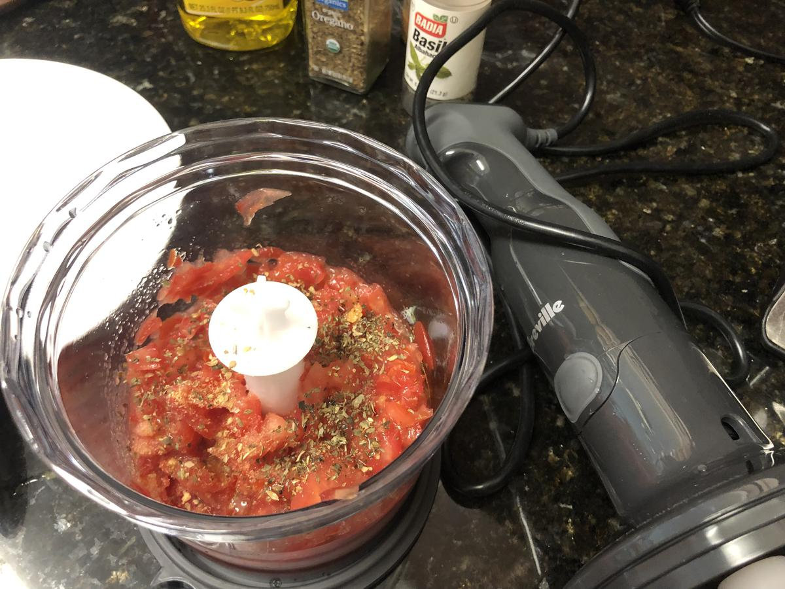

Loosely based on https://www.geniuskitchen.com/recipe/best-ever-bruschetta-443987
Personal rating: 3 / 5

2 Roma Tomatoes
1/2 tsp Black Pepper
1/2 tsp Basil
1/2 tsp Garlic Powder
1/2 tsp Oregano
1 tsp olive oil